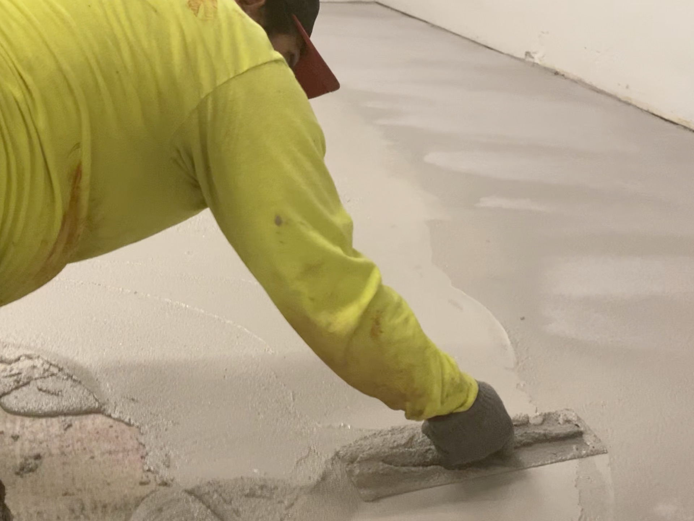

We get asked all the time how SaniCrete STX actually goes down. People expect some high-tech spray rig or specialized machine. The reality? Buckets and hand trowels. It might look old school, but there is a reason we still do it this way after more than three decades in the business.
Why Hand Troweling Still Wins

Cementitious urethane is not like epoxy or MMA. You cannot just squeegee it across a floor and call it done. STX gets installed at 3/8" thick with stainless steel wire reinforcement embedded in every square foot. That kind of thickness and precision demands hands on the material.
Hand troweling out of buckets gives our crews complete control over coverage, thickness, and reinforcement placement. Every trowel pass lets the installer feel the material, adjust on the fly, and make sure the stainless steel wire mesh sits exactly where it needs to be within the mortar bed. No machine can replicate that level of feel and responsiveness.
After the material is troweled to grade, it gets back rolled with a textured loop roller. This step serves two purposes. It consolidates the surface and creates a consistent texture profile that prepares the floor for the next critical step: a full quartz broadcast to rejection.
Broadcasting quartz aggregate to rejection means throwing sand into the wet surface until the material literally cannot accept any more. The result is a fully embedded aggregate layer that provides serious traction, even in the wet, greasy conditions that are standard in food and beverage plants.
Built for the Demands of Food Processing
Every step of the STX installation process exists for a reason. The 3/8" thickness provides a thermal barrier that protects the bond from freeze/thaw cycling in cooler and freezer environments. The stainless steel wire reinforcement adds tensile strength and crack resistance, which matters when heavy equipment, pallet jacks, and forklifts are hammering the floor every shift.
The textured quartz surface is not just about slip resistance. It also creates a mechanical bond profile for the topcoat system, which seals the floor and provides chemical resistance against the caustic washdown chemicals used in sanitation protocols. CIP solutions, chlorinated cleaners, phosphoric acid — STX handles all of it.
This is the kind of floor system that USDA and FSIS inspectors want to see. Seamless, sanitary, and built to last 20 years or more with proper maintenance.
No Shortcuts, No Outsourcing
SaniCrete installs every floor with our own crews. We do not sub out the work, and we do not cut corners on installation methods just because a faster option exists. Hand troweling takes more time and more skill than rolling or spraying, but the finished product speaks for itself.
Our installers have been doing this for years. Many of them have been with us for over a decade. That experience shows up in the quality of every finished floor, from the flatness of the surface to the consistency of the quartz broadcast.
When you watch an STX installation, it looks simple. Buckets, trowels, rollers, sand. But the knowledge behind every step is what separates a floor that lasts five years from one that lasts twenty.
Products Used
- SaniCrete STX – 3/8" stainless steel reinforced cementitious urethane mortar flooring system